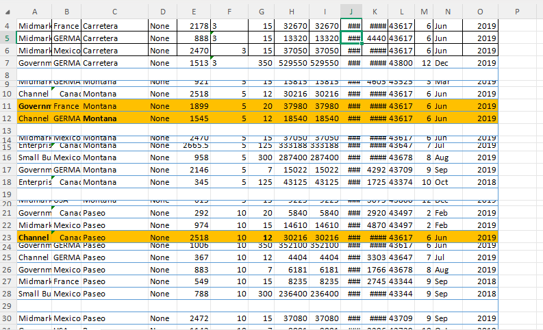
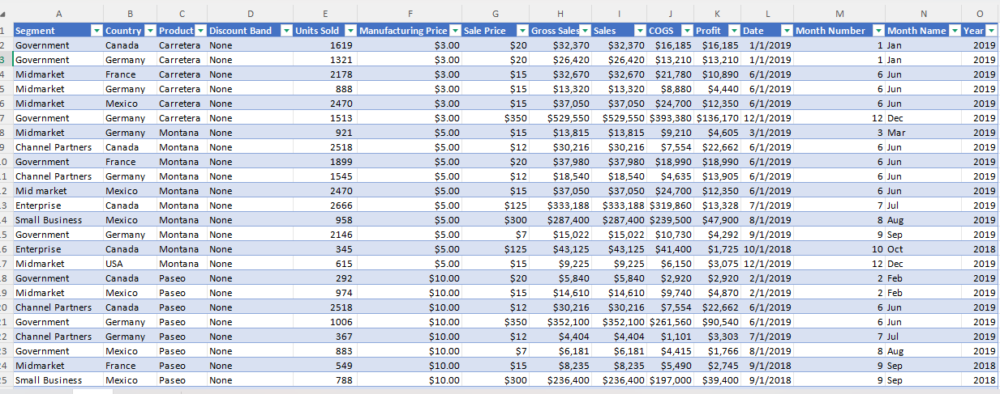
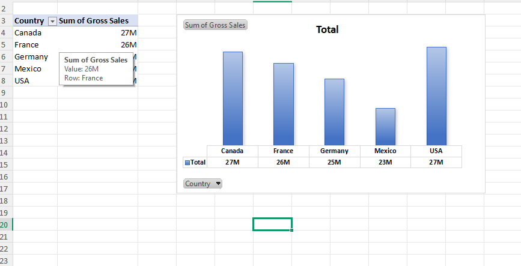
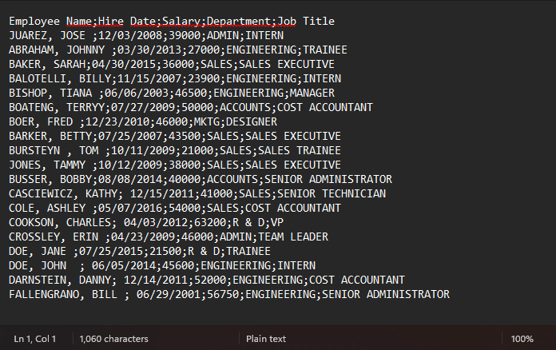
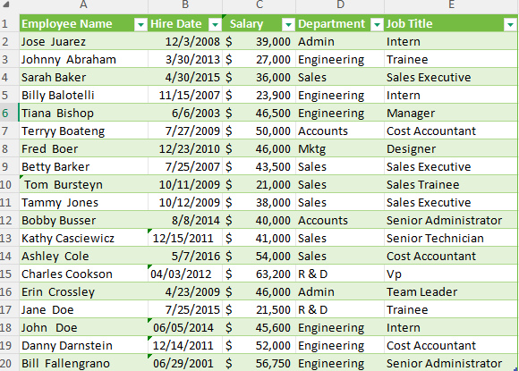
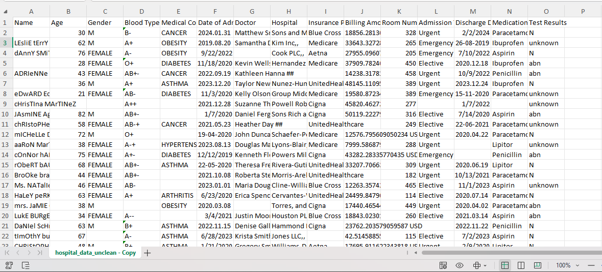
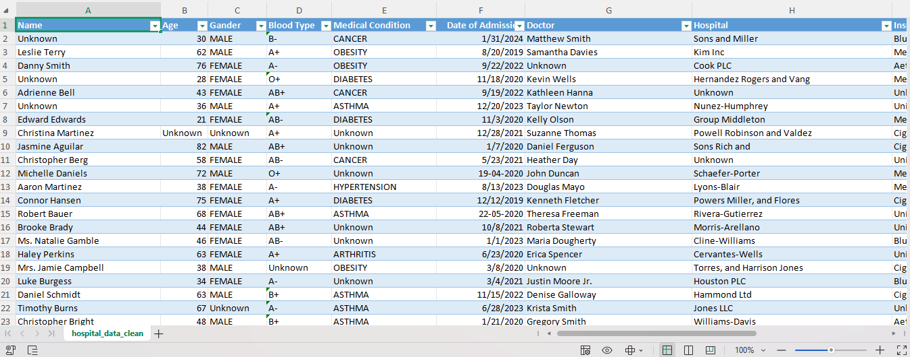
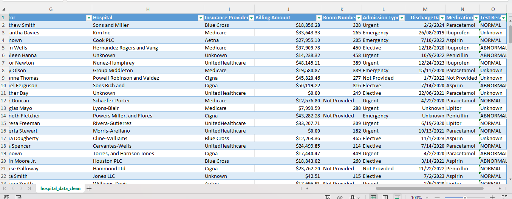

I am a Biotechnology and Bioinformatics student with a meticulous eye for detail. I specialize in transforming messy, raw datasets into clean, analysis-ready formats. By leveraging advanced Excel capabilities—such as Power Query, Pivot Tables, XLOOKUP, and complex logical functions—I efficiently clean, merge, and organize business data without the need for traditional programming. My scientific background ensures high accuracy and a structured approach to every dataset I handle.

Disorganized raw data with unreadable serial dates, width errors ('###'), and critical spelling inconsistencies (e.g., 'GERMA').


Applied Power Query to reformat dates and standardize names. Delivered a 100% clean dataset and built an interactive Pivot Chart visualizing gross sales across 5 countries.

Dataset exported as a messy, semicolon-delimited string with reversed names, erratic spaces, and entirely uppercase text.

Used 'Text-to-Columns', TRIM(), and PROPER() to clean formatting. Converted the unreadable dump into a structured Excel Table ready for HR analysis.

Raw clinical dataset suffering from severe formatting issues: inconsistent text casing, anomalous medical entries (e.g., Blood Type 'A++'), thousands of missing values, and misaligned date formats preventing time-series analysis.


Applied advanced string manipulation and logical data imputation to handle nulls safely ('Unknown'/'Not Provided'). Standardized medical terminology and synchronized date formats, delivering a 100% reliable healthcare database ready for biostatistical analysis.
Ready to transform your messy data into actionable insights? Let's discuss how I can help.
Get In Touch